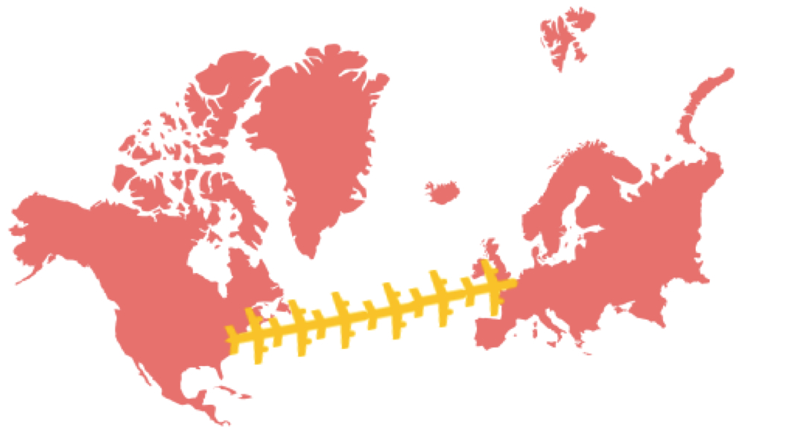

Food Waste: is everyone's business.
Food waste is one of the most pressing issues our planet is facing in these days.
Since cheap food has become more accessible than ever, the amount of wasted food
has increased enormously. In fact, about 1.3 Gigatonnes of food waste are produced worldwide every year.
In this article we discuss the problem of food waste from a global, local and personal perspective.
We begin by discussing what countries on a global scale produce most waste
and which products are most often thrown away.
In the second step, we will break our results down to a local level and
discuss the food waste problem in Massachusetts.
Here we will identify the top waste producing counties as well as their top waste producers.
Finally, we will discuss how everyone of us can make a huge impact
on the food waste problem via food banks.
Food Waste: a global problem.
- How much food is wasted worldwide, by country?
- Which types of foods are most wasted?
- What are the temporal trends in food waste?
- How does a country's average income correlate with food waste?

About 1/3 of the total food produced globally goes to waste, and this is costing the world approximately USD 750 billion.! For example, in America it’s estimated that 1860000 tones of food were wasted in 2011. This corresponds to 6000 airplanes with cargo- putting them together they will create a line long enough to cover the distance BOSTON - PARIS. However, some countries waste more food than others - many factors come into play. One of these factors is income, another one is expense on food. Naturally we expect, that these factors must be directly correlated to food waste. After all, the more money you have, the more you can spend on food and the more food potentially goes to waste. In the visualization below we present a data-based analysis of this hypothesis. Furthermore we analyze the amount of food wasted per country via a choropleth map and show how food waste for different product types evolve over time.
The way the visualization works is very simple: First, choose a type food category
that you are interested. Then select a time interval. All graphs will automatically
adapt to your choice. First, the choropleth world map will show you the total global distribution
of waste for you chosen category for the the time intervall you have chosen.
Second, the line chart shows you how the total worldwide foodwaste for your chosen
period relates to average income and to average expense on food.
Finally you can detect temporal trends in the waste for your chosen category via
the stacked area chart.
Our main findings are the following: First, on a per-capita basis, much more food is wasted in the industrialized world than in developing countries. Second, cereals and high calory foods are the biggest contributor to food waste. (Did you know that - cereals provide more food energy worldwide than any other type of crop?) Third, Food waste is not static; across the years levels of food wasted per country have changed, as well per food type. And finally, countries with higher average income tend to waste more food.
Food Waste: a local problem.
- What are the main contributors to food waste in Massachusetts?
- What are their absolute and relative contributions to the total food waste?
- Which counties and zip code areas of Massachusetts produce the most food waste?
Food waste is not only a global problem. It is also a critical local issue in the state of Massachusetts.
On this local level there are a large variety of different contributors to food waste
ranging from restaurant, to universities, to supermarkets and many more.
Also the different counties and zip code areas of Massachusetts contribute differently to the total food waste.
An interesting task is to analyze these different contributions based on data.
For that purpose we have created the visualization below.
In the choropleth map on the right you can see the absolute waste contributions of
different institutions, such as universities, hospitals, grocery stores and so on.
It also allows you to determine which regions (or more explicitly zip code areas) contribute most of the waste.
The sunburst chart on the left gives an insight into relative waste contributions.
It allows you to figure out the percentage of how much different institutions, counties
and zip code regions contribute to the total waste.
of Massachusetts Total Food Waste
Food Waste: a personal problem.
Food waste has an ecological and economical impact that permeates through all aspects of our life.
There is a lot you can do to reduce the amount of food waste you and your close ones produce. Here are some ideas:
- Shop Wisely - plan your meals, try not to fall for impulse buys that you will later throw away.
- Eat leftovers - there is nothing wrong with asking for a doggy bag after eating out - you can enjoy it later or the next day.
- Donate Food: you can donate that extra food instead of throwing it away to food banks or food pantries.
Especially, the last point of sharing your food at food banks can be highly effective.
There are many institutions like these close to you, check this map to find the closest to you.
You can also encourage your friends and family to donate theirs.
Food Waste: conclusions.
In this article we have discussed the topic of food waste.
The problem itself is highly important and timely, since
the amount of wasted food is dramatically increasing over the recent years.
In more detail, we have explored the different facets of the topic on the global, local and personal level.
First, on the global level we have compared the food waste produced by different
countries and analyzed its temporal evolution.
Second, on the local level we have discussed the different contributors to food waste
by picking the state of Massachusetts as an example.
Finally, we gave explicit recommendations how everyone can reduce her or his personal food waste.
References used to create the visualizations: